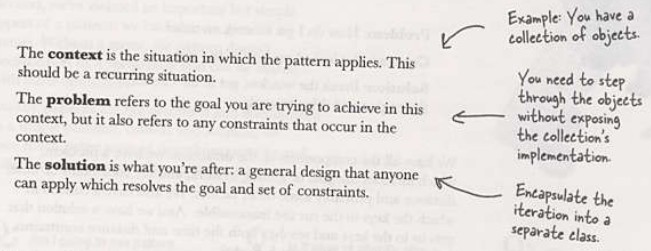
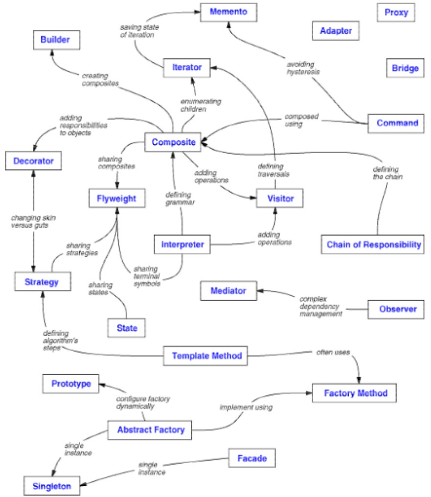

Vient de l'architecture : "A Pattern Language: Towns, Buildings, Construction" (Christopher Alexander, 1977).
At the core […] is the idea that people should design for themselves their own houses, streets and communities. This idea […] comes simply from the observation that most of the wonderful places of the world were not made by architects but by the people.
Patterns describe a problem and then offer a solutionLes patterns s'inscrivent donc dans une démarche "de bas en haut" : observer ce qui existe, en faire une description et en tirer des principes.
Adapté à l'informatique, le travail a consisté à observer comment certains problèmes récurrents ont été résolus dans des applications existantes, d'en donner une description, et d'en tirer un catalogue.
Ce travail a été effectué dans un ouvrage qui sert toujours la référence : "Design Patterns: Elements of Reusable Object-Oriented Software" (1994).
Les 4 auteurs sont souvent désignés par "the gang of four" (GOF).
Contient 23 patterns.
Un pattern est une solution à un problème dans un contexte

(Head First)
En résumé, un pattern est :
• Un moyen d’accomplir quelque chose • Une méthode éprouvée, réutilisée • Un code simple, « propre et peu perfectible » • Un jargon pour discuter du savoir faire • Quel que soit le langage à ObjetEn pratique, un pattern est un assemblage de classes pour un discours plus clair.
Une application = assemblage de patterns ? (en rêve)
Chaque pattern fournit une solution à un genre de situation donnée.
Outil de conception non figé : chaque pattern a des variantes, des formes dégradées ; la définition "académique" est à adapter à chaque cas.
Patterns are useful starting points, but they are not destinations.(Martin Fowler, Patterns of Enterprise Application Architecture)
(...)
Once you need the pattern, you have to figure out how to apply it to your circumstances. A key thing about patterns is that you can never just apply the solution blindly, which is why pattern tools have been such miserable failures. I like to say that patterns are “half baked,” meaning that you always have to finish them off in the oven of your own project. Every time I use a pattern I tweak it a little here and a little there. You see the same solution many times over, but it’s never exactly the same.
Bien noter que les patterns ne sont pas spécifiques à java (mais s'appliquent aux langages objet).
Catalogue
Les 23 patterns historiques sont habituellement classés de cette manière :Creational
Concernent l'instanciation des objets, fournissent un moyen de découpler un client des objets qu'il a besoin d'instancier.Donnent aux programmes plus de flexibilité, en permettant de décider quels objets doivent être créées suivant les besoins.
- Abstract factory (Fabrique abstraite) : groups object factories that have a common theme.
- Builder (Monteur) : constructs complex objects by separating construction and representation.
- Factory method (Fabrique) : creates objects without specifying the exact class to create.
- Prototype (Prototype) : creates objects by cloning an existing object.
- Singleton (Singleton) : restricts object creation for a class to only one instance.
Structural
Permettent de composer des classes ou des objets pour former des structures plus vastes.- Adapter (Adapteur) : allows classes with incompatible interfaces to work together by wrapping its own interface around that of an already existing class.
- Bridge (Pont) : decouples an abstraction from its implementation so that the two can vary independently.
- Composite (Objet Composite) : composes zero-or-more similar objects so that they can be manipulated as one object.
- Decorator (Décorateur) : dynamically adds/overrides behaviour in an existing method of an object.
- Facade (Façade) : provides a simplified interface to a large body of code.
- Flyweight (Poids-mouche) : reduces the cost of creating and manipulating a large number of similar objects.
- Proxy (Proxy) : provides a placeholder for another object to control access, reduce cost, and reduce complexity.
Behavioral
Concernent les interactions des classes et des objets et la distribution des resposabilités.- Chain of responsibility (Chaîne de responsabilité) : delegates commands to a chain of processing objects.
- Command (Commande) : creates objects which encapsulate actions and parameters.
- Interpreter (Interpréteur) : implements a specialized language.
- Iterator (Itérateur) : accesses the elements of an object sequentially without exposing its underlying representation.
- Mediator (Médiateur) : allows loose coupling between classes by being the only class that has detailed knowledge of their methods.
- Memento (Mémento) : provides the ability to restore an object to its previous state (undo).
- Observer (Observateur) : is a publish/subscribe pattern which allows a number of observer objects to see an event.
- State (Etat) : allows an object to alter its behavior when its internal state changes.
- Strategy (Stratégie) : allows one of a family of algorithms to be selected on-the-fly at runtime.
- Template method (Patron de méthode) : defines the skeleton of an algorithm as an abstract class, allowing its subclasses to provide concrete behavior.
- Visitor (Visiteur) : separates an algorithm from an object structure by moving the hierarchy of methods into one object.
GOF : Liens entre patterns 
Exercice :
Regardez la liste des patterns, et trouvez un ou plusieurs exemples de patterns que vous avez déjà utilisé en programmation. Décrivez rapidement la problématique et la manière dont le pattern a résolu le problème.